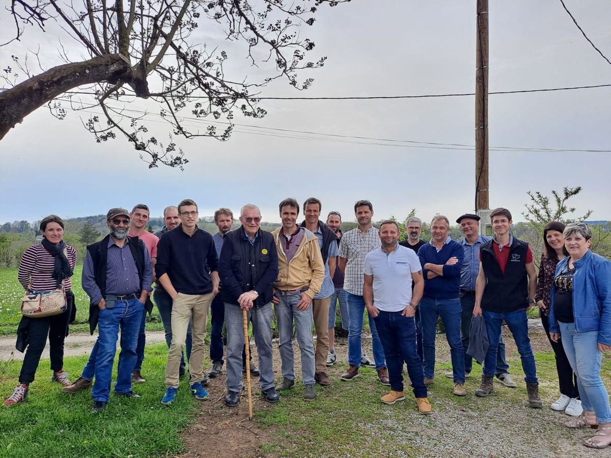
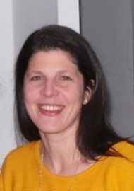
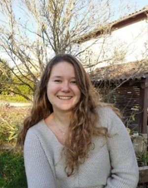
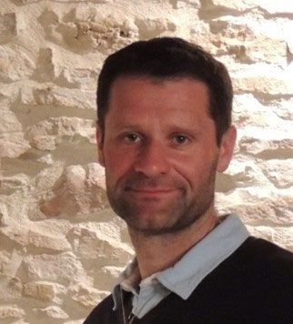

Conseil d'administration et équipe
Ceux qui font vivre l'OS Romane au quotidien
Le conseil d'administration
L'OS Romane est une coopérative. Le conseil d'administration est composé d'éleveurs adhérents, sélectionneurs ou non. Il assure la gouvernance de la coopérative : il prend toutes les décisions relatives au schéma de sélection, fixe les prix des reproducteurs et s'assure de la bonne gestion quotidienne par l'équipe.
| Président | Hubert MONY | 21 Francheville |
|---|---|---|
| 1er vice-président | Didier CANALIS | 11 Les Ourliacs |
| 2e vice-président | Olivier DELSAUX | 81 Montredon-Labessonnié |
| Trésorier | Thierry DOULS | 11 Salsigne |
| Secrétaire | Isabelle GUILLAUMONT | 54 Réchicourt-la-Petite |
| Membre | Xavier BIDON | 54 Pulligny |
| Membre | Timothée GOSSET | 02 Montloué |

L'équipe
Au quotidien, les salariés de l'OS œuvrent pour accompagner les éleveurs adhérents, mais aussi tout nouveau projet de création d'élevage ou de développement, que ce soit au travers de conseils sur la race ou de la fourniture de cheptel de départ.

Cristelle Alquié
Secrétariat
Tous les jours sauf les mercredi et vendredi après-midi

Léa Dumont
Commerce, conseils, génétique, communication et promotion

Christophe Bodard
Direction, commerce, génétique, conseils